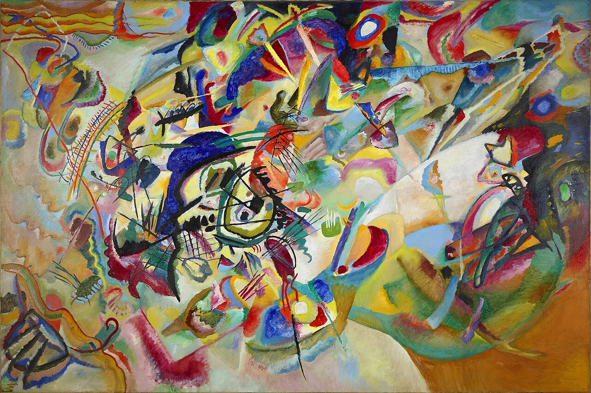

Route A · classic Western sequence
Foundations → Renaissance → Baroque → 18th/19th centuries → Impressionism → Modernism → Contemporary.
Visual, navigable, and no longer trapped in one scrolling page
You were right: one long page was flattening everything. This version turns the guide into separate visual chapters, each with multiple works, clearer period logic, and a flow you can actually follow.
Art history can be sliced in different ways and many traditions run in parallel.
You can enter from overview cards instead of hunting down sections in one scroll.
The goal is to see patterns, not just read period labels.
Mental map
Use this guide as a practical map, not a rigid law. One useful route is the familiar Western sequence; another is the global parallel-worlds route; another is to start from artists you already like and work outward.
Foundations → Renaissance → Baroque → 18th/19th centuries → Impressionism → Modernism → Contemporary.
Medieval Europe happens alongside Byzantine, Persian, Mughal, Chinese, Japanese, and other visual traditions.
Caravaggio / Rembrandt → Baroque page · Picasso → Modernism page · Monet / Van Gogh → Impressionism to modern break page.
Separate pages
Ancient, classical, Byzantine, and early medieval art
6 visual anchorsc. 1000 → 1800, with later echoesArt history is not only one European baton-pass
5 visual anchorsc. 1300 → 1600Perspective, humanism, anatomy, order, and revived classicism
5 visual anchorsc. 1600 → 1700Light, drama, spectacle, intimacy, and civic life
6 visual anchorsc. 1700 → 1875Rococo, Neoclassicism, Romanticism, and Realism overlap rather than lining up neatly
7 visual anchorsc. 1860 → 1907Light loosens, brushwork shows, structure shifts, and painting starts to stop behaving like a window
7 visual anchorsc. 1907 → 1970Fragmentation, abstraction, the conceptual turn, and the expansion of what counts as art
6 visual anchorsc. 1970 → nowInstallation, identity, memory, institutions, media, and global circulation
3 visual anchorsQuick preview
Each chapter uses multiple images and short pattern notes so the style reads as a family rather than a single token masterpiece.
c. 3100 BCE → 1300 CE
This is the foundation layer: royal images, sacred images, manuscripts, mosaics, temples, and cathedrals. Later art keeps reviving it or arguing with it.
Open this page


c. 1000 → 1800, with later echoes
These works stop the story collapsing into one narrow canon. Chinese scroll painting, Persian manuscript painting, Mughal court art, Japanese print culture, and South Asian architecture all run in parallel and change what major art history means.
Open this page


c. 1300 → 1600
The Renaissance is one map, not the only map, but it is still one of the clearest places to learn perspective, anatomy, ideal beauty, and composed pictorial space.
Open this page


c. 1600 → 1700
Baroque is not one look only. Caravaggio and Artemisia give you charged darkness and violence; Bernini turns sculpture into theatre; Rembrandt and Vermeer show how quiet can still be intense.
Open this page


c. 1700 → 1875
This is where many people get lost because the story forks: decorative court art, stern classical morality, emotional Romanticism, and then Realism’s pressure toward ordinary life. Seeing the pictures side by side helps.
Open this page


c. 1860 → 1907
This is one of the most useful routes for your taste. Start with light and atmosphere, then move to modern life, then to Van Gogh’s feeling and Cézanne’s structure. By then Picasso makes much more sense.
Open this page


c. 1907 → 1970
Modernism is not just weird art. It is a sequence of visible arguments: fracture the body, flatten the picture, abstract the world, prioritize the idea, monumentalize gesture, then turn mass media back on itself.
Open this page



c. 1970 → now
Contemporary art makes more sense when you stop asking only does it look realistic and start asking what system, memory, identity, or experience the work is staging. The point is often the encounter, not just the object.
Open this page